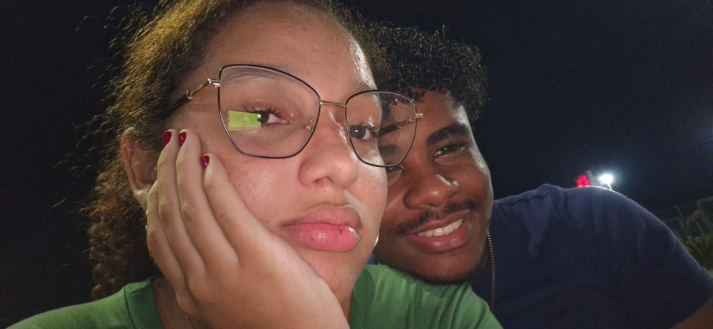
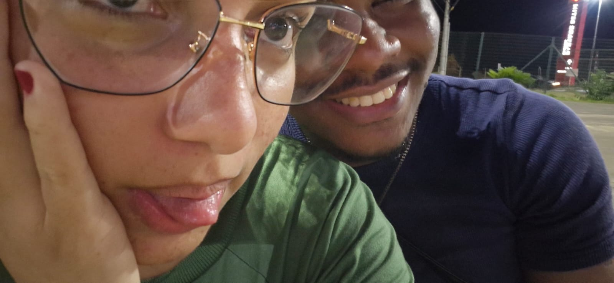

para você
Antes de tudo, uma carta.
Eu queria que essa história começasse assim: devagar, com cuidado, como quem abre uma carta guardada perto do coração.
capítulo 1
Desde 23 de julho
Desde 23 de julho, às 19:12, esse tempo virou parte da nossa história.
Esse é o tempo que estamos construindo, segundo por segundo.
capítulo 2
O que eu sinto por você
Eu gosto do jeito que você chegou sem forçar nada e, mesmo assim, ficou. Gosto da paz que sua presença me traz, da vontade que eu tenho de te cuidar e da alegria simples de poder falar com você.
capítulo 3
O que você me ensinou:
Esses são os melhores aprendizados e conhecimentos que você me ensinou, mesmo sem saber.

capítulo 4
Pensamentos
Todos os dias eu acordo e penso em você. Penso nessas fotos e no futuro incrível que terei ao seu lado. Muito obrigado, amor!


capítulo 5
As coisas que eu mais gosto em você
Gosto do seu sorriso, de quando você fica brava por absolutamente nada, de quando a gente sai junto e você coloca o braço em volta do meu, de quando você fica com vergonha quando eu te elogio. Gosto de simplesmente ter um tempo para conversar com você.




capítulo 7
Sua música
Essa música fica aqui como uma lembrança nossa. A capa pode ser uma foto de vocês dois, como se fosse o álbum da história.
versículos
"Acima de tudo, porém, revistam-se do amor, que é o elo perfeito." Colossenses 3:14
"O amor é paciente, o amor é bondoso." 1 Coríntios 13:4
"Assim, permanecem agora estes três: a fé, a esperança e o amor." 1 Coríntios 13:13
"Acima de tudo, porém, revistam-se do amor, que é o elo perfeito." Colossenses 3:14
capítulo 8
O futuro que eu espero
Eu imagino um futuro com conversas sinceras, orações, risadas, planos simples e uma vontade constante de cuidar bem de você.
capítulo 9
Mais pedacinhos de nós
Algumas páginas não precisam explicar tudo. As fotos falam, e o coração entende.
final